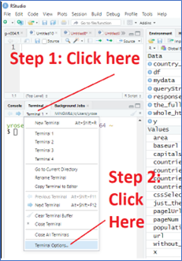
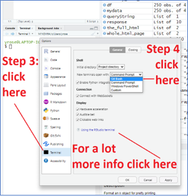
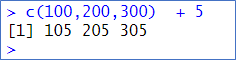
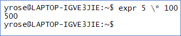
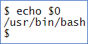

18 How to run the Bash Shell
18.0.1 How to run Bash on Microsoft Windows
The following are several options for installing Bash on Windows.
Git Bash - this is a popular option that is easy to install and to use. While git bash doesn’t include all of the many Bash features and commands, it is enough to get started and be useful for basic tasks. In my opinion (in 2024) for someone who just needs to learn the basics of Bash, this is one of the easiest options to try. The other options may be a little more work to install.
As of 2023, to install this option, go to gitforwindows.org , download the program and install it. For more info, see the MS Word document entitled HowToInstallBashOnWindows.docx
Cygwin - this is not as easy to install and use as “git bash” but has MUCH more functionality than Git Bash does.
MinGW - also not as easy to install and to use as “Git Bash”, but it is another option …
Windows Subsystem for Linux (WSL) - Microsoft has created the ability to install a complete “Linux Subsystem” on your Windows machine. The details for how this is done and what requirements you need to have on your computer is beyond the scope of what we will discuss here.
18.1 Using Bash in RStudio’s “Terminal” window
The RStudio program has a “terminal” window in which you can run CLI commands. This is usually found as a “tab” in the lower left hand window “pane”. You can also choose the following menu choices to open the Terminal tab: Tools menu > Terminal > Move Focus to Terminal
You can configure RStudio to use whichever CLI you have on your computer. The posit.cloud version of RStudio as well as the locally installed version of RStudio that runs on a Mac is automatically configured to use the Bash Shell as the CLI so just opening the Terminal window is all you need to do.
18.1.1 Make sure you are using Bash and not another CLI
If you are using a “local” install of RStudio on Windows, then you must first install a Bash environment (I recommend Git Bash). After installing Bash on your computer, you need to configure RStudio to use Bash in its “terminal” tab as described below). To do so, choose Bash from the following menu (this is covered in more detail in the following section of this document):
Tools menu > Global Options > Terminal > New terminals open with (dropdown list) >
(choose Bash or Git Bash or whatever version of Bash you have installed)
18.1.2 Problems running Bash in RStudio? Try changing some options in RStudio.
There are MANY ways to configure the RStudio environment. If you're having touble running Bash from the Terminal window in RStudio, follow the steps shown below. (To learn a lot more about how to use the Terminal window in RStudio, see the official documentation here:
https://support.posit.co/hc/en-us/articles/115010737148-Using-the-RStudio-Terminal
(You can also get to this page by clicking on the link entitled "Using the RStudio terminal" in the RStudio Terminal options window, as shown in the screen-shots below.)
Are you having problems getting the "Bash shell" command line interface (CLI) to run in RStudio?
If you don't see the RStudio "Terminal" tab anywhere in the RStudio interface then choose, the following menu choices from RStudio's main menu: Tools > Terminal > Move Focus to Terminal
If you DO see the Terminal tab but you aren't running the "Bash shell" command line interface in the Terminal, then do the following:
 
RStudio is highly configurable. To modify any of the plethora of options for RStudio - choose the "tools" menu in RStudio and select "General Options". That will open the window shown in the 2nd screenshot above. You can then choose from any of the categories on the left hand side of that window to access the options under that category. For example, to change the font used in the editor you can click on the "Appearance" category (on the left side of the Options window) - at which point you will see several options including those allowing you to specify the font, font-size, etc.
18.2 What is the Bash "prompt" ?
When you type commands in the R console, R "prompts" you to enter a new command every time you see the "> " at the beginning of a line. For example, the following shows an R command being run in the R Console window. The ">" at the beginning of the second line is the R "prompt", where you can enter your next command:
The "R" prompt below is ">"

In a similar way, before you type a command in Bash, the CLI "prompts" you to enter a new command. However, in Bash the exact "prompt" can be different on different computers and for different users. Often the Bash prompt is something like this:
username@hostname:~$ (TYPE YOUR NEXT BASH COMMAND HERE)
For example, on my computer, the following shows when happens on my computer when I run the Bash command, "expr 5 \* 100" , which simply multiplies 5*100 to get 500. The next line shows the prompt waiting for the user to type another command:
The Bash prompt below is: yrose@LAPTOP-IGVE3JIE:~$
In this example, "yrose" is my username on my computer and LAPTOP-IGVE3JIE is the "name" of my computer (many people don't realize that their computer has a name). This type of prompt became popular since power‑users of Bash often connect remotely to many different computers from their Bash window. By just looking at the Bash prompt a power‑user who might be connecting to different machines can know immediately which computer they are currently connected to.
The ~ is called a "tilde". The significance of the tilde, ~, will be discussed more later. Finally, the $ at the end of the prompt is there to show where you are to enter your next command. Historically, the Bash prompt was JUST a dollar sign, $ , similar to how the R prompt is just a greater than sign, >. In subsequent years, Bash evolved to show more information in the prompt. The prompt can be configured to show a lot of different types of information (see the next section).
18.2.1 How to change the Bash prompt
As noted above, the Bash prompt can be configured to include different types of information. Sometimes it is simplest to just see a simple '$' prompt. To do so, type the following command. There shouldn't be any spaces on either side of the equals sign:
PS1='\$ '
After doing so your Bash prompt should become a single dollar sign, $. To change the prompt to the more typical version shown in the previous section type the following command:
PS1='\u@\h:\w\$ '
The \u stands for the username, \h for the hostname and \w for the "working directory" (we'll discuss what that means later). See the following page for more information about how to configure your prompt in all sorts of interesting ways,
https://linuxhint.com/bash-ps1-customization/
Changing your prompt to the "working directory" makes navigating the Bash environment much easier. Once you are running Bash, to see the "working directory" in the prompt, type the following Bash command. NOTE: there are no spaces ANYWHERE in this command other than the one space that appears before the final single quote (i.e. apostrophe):
PS1='\w\$ '
Now a user, joe, who runs the following commands will see the results shown below.
$ cd # change the working directory to /Users/joe
$ PS1='\w\$ ' # change the prompt to include the working directory
~$ pwd # ~ is shorthand for /Users/joe
/Users/joe
~$ cd Documents # move to another directory
~/Documents$ pwd # show the path for the current directory
/Users/joe/Documents
If you want this to happen every time you start a new Terminal window, then run the following command. This command creates a file named .profile (there is a period at the very beginning of the filename) in your "home directory". This file contains options that control how Bash runs.
echo "PS1='\w\$ '" >> $HOME/.profile
In the rest of this document, I will use a simple $ prompt. This makes it easier to read the information in this document.
18.3 How can I confirm that I'm using the "Bash" Command Line Interface program?
As noted above, both Windows and Mac can be configured with different CLI programs. The RStudio Terminal window can be configured to use any CLI that is installed on your computer. The instructions to do so appear earlier in this document. To confirm that you are actually using the Bash CLI, you can run the following command:
echo $0
If you are running the Bash shell/CLI, then the output should include the word "bash" somewhere. For example the following is what I get when I run this command on my computer:

If you do not get a result showing the word "bash" somewhere, refer to the sections above in this document that describe how to configure RStudio to use Bash.
18.4 "Bash commands" or "Linux commands" ?
Technically, many of the commands that you run in Bash are actually "Linux" commands (or Unix commands). Therefore when searching online for information, it is often more appropriate to use the words "Linux command" in your search instead of "Bash command". As we said above, the Bash shell, is only one of many CLIs that are available on Linux. However, the majority of commands we will learn are able to be used with ANY Linux CLI and not just Bash.
In addition to being able to use Bash on Apple Mac, you can also access many of the vast majority of these "Linux" commands on Mac. (Remember that Linux and Mac are both derived from the Unix operating system). Similarly, when you install a Bash environment on Windows, it will include many of these "Linux" programs too.